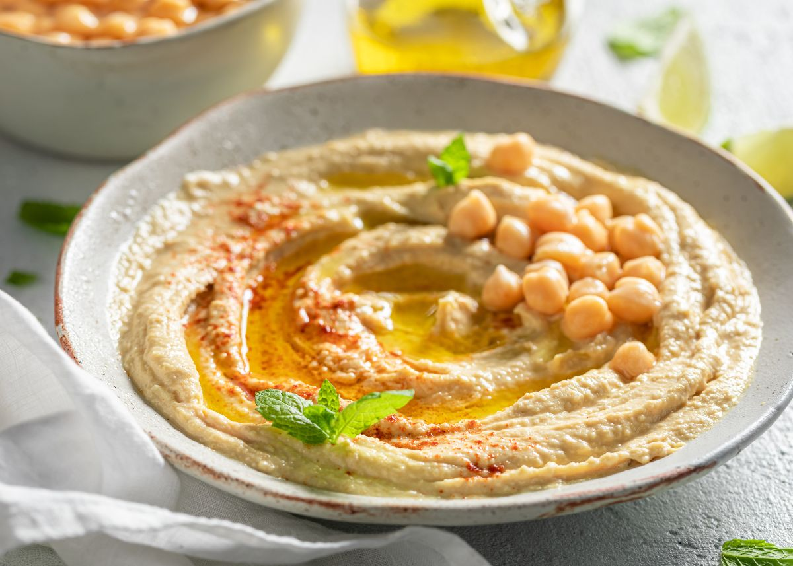

Hummus (puré de garbanzos con tahini)
Ingredientes:
- 400 g de garbanzos cocidos (pueden ser enlatados)
- 2 cucharadas de tahini (pasta de sésamo)
- Jugo de 1 limón
- 1 diente de ajo
- 3-4 cucharadas de agua fría
- 3 cucharadas de aceite de oliva
- Sal al gusto
- Comino (opcional)
- Pimentón dulce y perejil para decorar

Pasos:
- Si usas garbanzos secos, cocínalos en agua hasta que estén tiernos (unos 1-2 horas). Si usas enlatados, escúrrelos y enjuágalos.
- En un procesador de alimentos, mezcla los garbanzos, tahini, jugo de limón, ajo y sal. Procesa hasta obtener una pasta suave.
- Agrega el agua poco a poco hasta alcanzar la consistencia deseada (cremoso pero no líquido).
- Prueba y ajusta la sal o el limón al gusto. Si deseas, añade comino para un toque extra de sabor.
- Sirve en un plato hondo, rocía con aceite de oliva y espolvorea pimentón dulce y perejil picado por encima.
Home